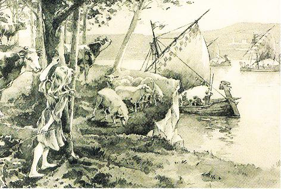
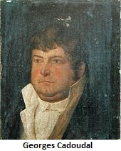
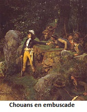

Alain le Renard
Alan The Fox
Dialecte de Cornouaille
|
Dans l'édition de 1867, le nom de l'informateur ne figure plus. L'affirmation "se rapporte" est corrigée en "...doit se rapporter..." F. Gourvil (p.355) indique qu'il n'a pu identifier ni ce Louis Bouriquen ni la paroisse de Lannuel-en-Aré. On a vu au chant précédent que ce problème est désormais résolu. Cf. Klemmgan Itron Nizon Selon Luzel et Joseph Loth, cités (P. 389 de son "La Villemarqué") par Francis Gourvil qui se range à leur avis, ce chant historique ferait partie de la catégorie des chants inventés . L'examen du carnet N°2 prouve le contraire. On trouvera ce texte sur la page bretonne Al Louarn , où les modifications et adjonctions opérées par La Villemarqué par rapport à la version initiale surchargée, pour autant qu'elle soit discernable (!), sont imprimées, comme dans les traductions ci-après, en caractères gras . D'autres explications au sujet de ce chant et du chant du carnet 2 "L'armée catholique" sont donnés sur la page bretonne consacrée à la gwerz du Barzhaz "Les Ligueurs". |
 |
In the 1867 edition, the informant's name is left out. The affirmative statement "refers to" is amended to "...might refer to..." F. Gourvil (p.355) states that he could identify neither this Louis Bourriquen nor the parish Lannuel-en-Aré. As stated in the synopsis of the previous song this problem is now solved. Cf. Klemmgan Itron Nizon According to Luzel and Joseph Loth, quoted by Francis Gourvil (p. 389 of his "La Villemarqué"), this historical song was " invented " by its alleged collector. The examination of notebook N ° 2 proves the opposite. The original text is copied on the Breton page Al Louarn , where the changes and additions made by La Villemarqué compared to the initial version, inasmuch as it is discernible (!)are printed, as in the translations below, in bold letters . Further explanations about this song and the Copybook N°2 song "The Royal and Catholic Army" are given on the Breton page dedicated to the Barzhaz gwerz "The Leaguers". |
Ton
Mode dorien au début, 1er mode de plain-chant à la fin
Rythme 6/8 et 3/8 à la 9ème mesure (arrt: Chr. Souchon)
| Français | English |
|---|---|
|
1. Le Renard
Barbu
glapit,
glapit, glapit, glapit dans le bois; Glapit, glapit dans le bois! Malheur à vous, lapins étrangers Que son oeil vif aperçoit! Oui, malheur à vous, lapins étrangers Que son oeil vif aperçoit! 2. Dents aiguës, pattes agiles, Les griffes toutes rougies de sang. Les griffes rougies de sang. Alain le Renard glapit, glapit: C'est la guerre que je sens! Oui, Alain le Renard glapit, glapit: C'est la guerre que je sens! 3. Les Bretons aiguisent Leurs épées émoussées, comme tu vois, Emoussées comme tu vois. Comme pierre à aiguiser ils ont, Les cuirasses des Gaulois. Oui, comme pierre à aiguiser ils ont, Les cuirasses des Gaulois. 4. Vois les Bretons ramasser la moisson sur le champ de bataille , Oui, sur le champ de bataille, Point de faucilles ébréchées pour Frapper d'estoc et de taille. Non, point de faucilles ébréchées pour Frapper d'estoc et de taille. 5. Non le froment du pays, ou le seigle de notre Bretagne Seigle de notre Bretagne, Mais têtes sans barbe des Saxons, Gaulois à la tête glabre! Mais têtes sans barbe des Saxons, Gaulois à la tête glabre! 6. J'ai vu les Bretons fouler aux pieds l'aire et laisser leurs empreintes, Oui, sur l'aire leurs empreintes, Et voler la balle des épis Parmi les pleurs et les plaintes. Oui, et voler la balle des épis Parmi les pleurs et les plaintes. 7. Mais foin des fléaux de bois pour battre, les Bretons n'en ont cure. Non, les Bretons n'en ont cure! Ils préfèrent les bâtons ferrés, les sabots de leurs montures. Ils préfèrent les épieux ferrés, les sabots de leurs montures; 8. Entendez le cri de joie pour saluer la fin du battage! O oui, la fin du battage! De l'Elorn jusqu'au Mont Saint Michel On l'entend sur nos rivages . De l'Elorn jusqu'au Mont Saint Michel On l'entend sur nos rivages. 9. De l'Abbaye de Gildas jusques au Cap où finit la terre, Oui, jusqu'au Cap Finistère! Aux quatre coins du pays Breton , Au Renard qu'on rende gloire! Aux quatre coins du pays Breton Au Renard qu'on rende gloire! 10. Et que l'aile de la gloire sur le Renard, notre chef, s'attarde! Oui sur le Renard s'attarde! Qu'on garde la mémoire du chant Mais que l'on plaigne le barde! Qu'on garde la mémoire du chant Mais que l'on plaigne le barde! 11. Celui qui chanta ce chant Aujourd'hui ne tient plus de harangues. Il ne tient plus de harangues! Et pour cause, les Gaulois lui ont, Le pauvre, coupé la langue! Oui, et pour cause, les Gaulois lui ont, Le pauvre, coupé la langue! 12. S'il n'a plus de langue il a Conservé sa farouche énergie, Oui sa farouche énergie, Et sa main sûre pour décocher le trait de la mélodie Oui, et sa main sûre pour décocher le trait de la mélodie! Trad. Christian Souchon (c) 2008 |
1. I heard the
Bearded
Fox yelp
heard him yelp, heard him yelp in the glade! I heard him yelp in the glade. O foreign rabbits! Ill luck for you! His eye is like a sharp blade! Alas, foreign rabbits! Ill luck for you! His eye is like a sharp blade! 2. Sharp are his teeth, swift his feet, and see how red with blood his nails are! How red with blood his nails are! The Fox is yelping, Alan the Fox, One word he repeats: it's "war!" O, The Fox is yelping, Alan the Fox, One word he repeats: it's "war!" 3. I've seen the Bretons who were busy grinding the edge of their swords, O the blunt edge of their swords! But it was not on Brittany's stones: On the breast-plates of the Gauls! O no, it was not on Brittany's stones, But on breast-plates of the Gauls! 4. I've seen the Bretons who were on the harvest in the battlefield, Harvest in the battlefield, With blunt sickles they scorned to work Not with their sharp swords of steel! O no, with blunt sickles they scorned to work But not with their swords of steel! 5. Neither the wheat of our fields, nor the rye grown in fields over here, O grown in fields over here, But beardless heads from Saxon land, or past the Gaulish frontier! O, but beardless heads from Saxon land, or past the Gaulish frontier! 6. I've seen the Bretons who stamped Their imprint into the threshing floor. O into the threshing floor! I've seen all the chaff flowing around From beardless ears of the corn. O I've seen the chaff as it flew around From beardless ears of the corn! 7. It is not with wooden flails That the Bretons are threshing the floor. That they are threshing the floor. That is what their spears with iron nails, Hooves of their horses are for! O that's what their bludgeons with iron nails, Hooves of their horses are for! 8. I heard a loud cry of joy When the threshing work had been complete threshing work had been complete From Mont Saint Michel to Elorn dale, Hailing the achieved feat. O from Mont Saint Michel to Elorn dale, Hailing the achieved feat. 9. From Saint Gildas Convent house All the way to the Cape of Land's End, O to the Cape of Land's End For his great deeds be everywhere Extolled the Fox in our land O For his great deeds be everywhere Extolled the Fox in our land 10. A hundred times be the Fox glorified and praised from age to age! Glorified from age to age! Keep in mind the song for evermore Though the bard pity deserves. O keep in mind the song for evermore Though the bard pity deserves. . 11. He could not sing it again, The poet who has first performed this song. Who has first performed this song The reason is that the Gauls have cut The unfortunate bard's tongue. O the reason is that the Gauls have cut The unfortunate bard's tongue. 12. But though deprived of his tongue His unswerving heart is still immune, His brave heart is still immune And neither heart nor hand does he lack To shoot the shaft of the tune! O Neither heart nor hand does he lack To shoot the shaft of the tune! Tranlated: Ch. Souchon (c) 2008 |
Vers le texte breton
To the Breton text

|
Alain II Barbetorte
Le Duc de Bretagne, Alain II Barbetorte (910 - 952), surnommé "Le Renard" par la tradition, délivra son pays de la tyrannie des Normands. Il surprit l'ennemi près de Dol, au milieu d'une noce et en fit grand carnage. De Dol, il s'avança vers Saint-Brieuc où d'autres étrangers éprouvèrent le même sort. A cette nouvelle, tous les hommes du Nord qui étaient en Bretagne s'enfuirent du pays, et les Bretons, accourant de toutes parts, reconnurent Alain pour chef (937). La libération s'acheva le 1er août 939 par la victoire de Trans sur les Normands. En 944 il entra en guerre contre son allié, Juhel de Rennes, et les Normands reprennent leurs pillages pour un temps. Sa mort prématurée mit toutefois un terme à ses projets et à son oeuvre de restauration de la puissance bretonne. Les Bretons portaient les cheveux longs, tandis que les Normands comme on peut le voir sur la tapisserie de Bayeux se rasaient les cheveux et la barbe, d'où le surnom d'"épis sans barbe" qui leur est donné ici. Les noms de "Gaulois" et de "Saxons" sont ici synonymes d'"ennemis" en général. (Dans les chants Jacobites en gaélique d'Irlande et d'Ecosse, "Gall" signifie presque toujours "anglais"). Alain ou Georges?  Dans le présent chant, le nom d'Alain et sa barbe ne sont évoqués qu'une seule fois. Bien que les Saxons soient cités parmi les ennemis, il est troublant que La Villemarqué ait recueilli " ce chant de guerre ...dans la montagne d'Arrée de la bouche d'un vieux paysan, soldat de Georges Cadoudal" (argument). Il ajoute dans sa "note ":"Comme je demandais au paysan qui me les chantait quel était ce 'Renard barbu' dont la chanson faisait mention: 'Le général Georges [Cadoudal] sûrement répondit-il sans hésiter. On donnait effectivement à Georges Cadoudal le surnom de 'Renard', fort bien justifié par sa rare finesse."Ne serait-ce pas le vieux soldat qui a raison? D'autant que, selon le Dictionnaire du Père Grégoire de Rostrenen (1732, P.25), "'Alanig al Louarn' est le nom traditionnel du renard, tout comme "Gwilhaouig ar Bleiz" est celui du loup". Ce que révèle le carnet N° 2 Le titre "Bataille d'Alain B. Torte", vraisemblablement inséré après coup entre la fin du chant précédent et le début du présent chant ("Je vis les Bretons"), page 194 du carnet, ne semble pas se justifier par le corps du texte qui se poursuit à la fin de la page suivante, après une chanson de matelots. Le nom d'Alain en est absent . Et surtout, on voit que La Villemarqué a transformé la strophe 5 dont le texte original était: 5. Kennebeut gwinizh ar vro, kennebeut hor segal, Nemet pennoù boull Bro Saoz ha Bro Spagn ha Bro C’hall. 5. Non pas le froment du pays, non pas notre seigle, Mais les têtes en boules d'Angleterre, d'Espagne et de France. L'évocation de soldats espagnols nous transporte au XVIème siècle, et plus précisément à l'époque de la Ligue , lorsqu'à la mort de Charles de Bourbon en mai 1590 , Philippe II revendiqua le trône de France pour sa fille Isabelle. L'arrivée de ses troupes en soutien du Duc de Mercoeur , prétendant à la couronne ducale, décida la reine d'Angleterre Elisabeth à envoyer le général John Norreys, en soutien de l'armée du roi protestant Henri IV. Ce chant est donc la suite logique du précédent sur la même page 194 du carnet qui sera effectivement intitulé "Les Ligueurs" dans le Barzhaz de 1845. La Villemarqué était d'ailleurs certainement arrivé tout d'abord à cette conclusion, car il avait noté dans la marge gauche, p. 194, en regard du présent chant: "Probablement la bataille de Craon en 1592" . Effectivement, cette bataille vit la victoire sur l'armée royale du prince de Conti et du prince de Dombes et leurs alliés anglais, des Ligueurs venus de Bretagne sous les ordres du duc de Mercoeur, son lieutenant Boisdauphin et du bandit La Fontenelle, assistés de 2000 Espagnols commandés par Don Juan d'Aguila ainsi que du Ligueur Pierre Le Cornu qui défendait cette ville de Mayenne. Les Espagnols qui se considéraient en pays conquis ne tardèrent pas à être considérés par les Bretons comme des ennemis, même si leur débarquement au Blavet, est peut-être à l'origine du fameux chant Le cygne . De Mercoeur à Alain Barbe-Torte Il n'est peut-être pas sans intérêt de souligner les retouches apportées au texte original pour en faire le récit d'une bataille d'Alain Barbe-Torte. Curieusement, cette strophe dont l'objet est, bien entendu d'insister sur l'antiquité de la pièce, évoque le refrain d'un chant de la collection de Penguern qui pourrait bien faire allusion à des événements aussi reculés que le règne d'Alain Barbe-Torte, à savoir la destruction du légendaire évêché du Yaudet par les Normands en 836, Les loups de la mer . Le dictionnaire du Père Grégoire de Rostrenen qui date de 1732, indique à la page 134: On trouvera à la page Loups de la mer les développements à propos de ce chant qui figuraient autrefois sur la présente page. |
Alan Twisted Beard
The Duke of Brittany, Alan Twisted Beard (910 - 952), alias "The Fox" according to tradition, freed his country from the Norman tyranny. He pounced on the enemy, near Dol, during a wedding party, making an awful carnage. From Dol, he went on towards Saint-Brieuc where other foreigners met with the same fate. On hearing this news, all "Northmen" -Normans- who were in Brittany left the land, whilst the Bretons hastened from all directions, to acknowledge Alan as their chief (937). The liberation of Brittany ended on 1st August 939 with the victory of Trans over the Normans. In 944 he waged war against his former ally, Juhel of Rennes and the Normans resumed their raids for a lapse of time. His untimely death put however an end to his endeavours to restore the Breton power. The Bretons wore their hair long, while the Normans, as one can see on the Bayeux tapestry, shaved their hair and beard, what brought them the nickname "beardless rye-ears" given them here. The nouns "Gaul" and "Saxon" are here synonymous with "enemy" in general. (In the Gaelic and Irish Jacobite songs, "Gall" mostly means "English"). Alan or George?  In the present song the name "Alan" and his beard are mentioned only once. Though the Saxons are quoted as enemies, it is puzzling that La Villemarqué should have learnt "this battle song from the singing of an old Arrée Mount peasant who had fought under Georges Cadoudal" ("argument"). . In his "note" he adds: "As I asked the peasant who sang who was, in his opinion, the "bearded fox" in the song, he answered immediately: " General Georges [Cadoudal] to be sure!" In fact "the Fox" was the nickname given Georges Cadoudal on account of his remarkable cunning."How if the old soldier was right? It is all the more probable, since, as stated in the Dictionary of the Rev. Gregory of Rostrenen (1732, P.25), "'Alanig al Louarn' is the traditional nickname of the fox, as is "Gwilhaouig ar Bleiz" that of the wolf." What notebook N ° 2 reveals to us The title "Battle of Alain Twisted B.", probably inserted after the recording of the lyrics between the end of the previous song and the beginning of the piece at hand ("I saw the Bretons..."), on page 194 of the notebook, does not seem to be justified by the text that continues at the bottom of the next page, following a shantee. The name 'Alan' is missing altogether . And above all, we see that La Villemarqué transformed stanza 5 whose original text was: 5. Kennebeut gwinizh ar vro, kennebeut hor segal, Nemet pennoù boull Bro Saoz ha Bro Spagn ha Bro C’hall. 5. Neither the wheat grown in our land nor our rye, But the helmeted heads from England, Spain and France. The evocation of Spanish soldiers forwards us to the sixteenth century, and more precisely to the time of the League , when, after the death of Charles de Bourbon in May 1590 , the Spanish king Philip II claimed the throne of France for his daughter Isabel. The arrival of his troops in support of the Duke of Mercoeur , pretender to the ducal crown, prompted the Queen of England Elizabeth to send General John Norreys, in support of the army of the Protestant king Henry IV. This song is therefore the logical continuation of the precedent on the same page 194 which will be entitled "Les Ligueurs" in the 1845 Barzhaz. Besides, La Villemarqué might have come at first to the same conclusion, for he had noted in the left margin, on p. 194, opposite the present song: "Probably the battle of Craon in 1592" . Indeed, this battle ended with the victory over the royal army (a few French regiments, 1200 English, 800 lansquenets) under Prince de Conti and Prince de Dombes and their English allied, of Leaguers from Brittany led by Duke de Mercoeur, his lieutenant Boisdauphin and the infamous La Fontenelle. They were assisted by 2000 Spaniards under Don Juan d'Aguila . The Mayenne town Craon was defended by the League chieftain Pierre Le Cornu. The Spaniards who considered themselves as conquerors of the country they were meant to assist were quickly regarded by the Bretons as enemies, even if their landing at Blavet, could be the subject-matter of the famous song The Swan From Mercoeur to Alan Twisted-Beard It is perhaps not without interest to highlight the alterations made by La Villemarqué to the material he worked with, to make of it a record of a battle fought by Alan Twisted Beard. Curiously, this stanza which aims, of course, at insisting on the antiquity of the piece, resembles the chorus of a song in the de Penguern MS collection, which could actually refer to events as remote as the reign of Alan Twisted Beard: to wit, the destruction of the legendary bishopric of Yaudet by a Norman raid in 836. (See "The wolves of the sea" ). Rev. Gregory of Rostrenen's dictionary, dated 1732, has on page 134: On the Wolves of the Sea page, you will find developments about this song that were once located on the present page. |
|
"Les Chouans selon Villemarqué", un livre au format A4. 
Cliquer sur le lien ou sur l'image ci-dessus |